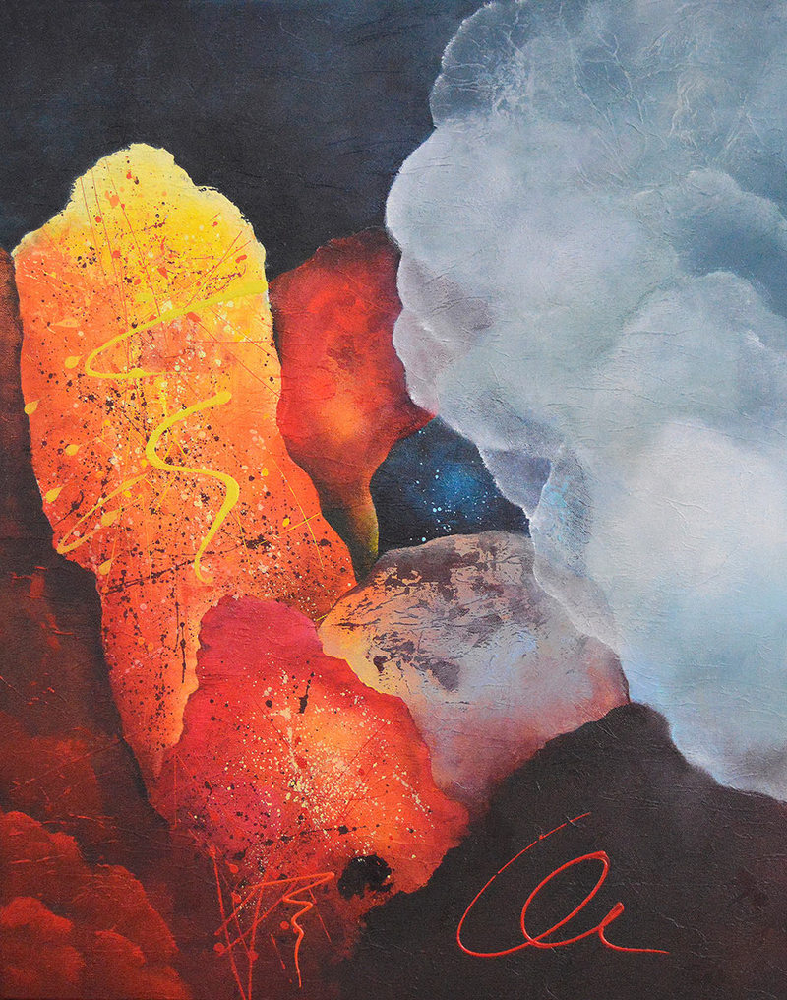

Improvisation-12

by Vasco Kirov, South Africa, 2016
Painting, Acrylic, Unframed
Size 77 x 61 cm
Shipping : Worldwide
Free Shipping.
$780
Purchase
About the Artist:-
For me painting is a way to convey to others what my inner reality looks like. I guess, that is what most artists are trying to do. This is why my paintings are mostly abstract. I access this inner reality with my eyes closed in quiet and relaxed state or in lucid dreams, which I am blessed to have from time to time. In this personal reality light and colour form structures with astonishing size and grandeur generating emotions and strong desire to share the experience. Sharing however is not easy. It is like to listen to the most amazing music and then try to talk about it. I am not sure that I will ever be able to express these experiences in full, but every painting brings me a bit closer.
About the Artwork:-
This painting belongs to a body of works titled “Abstract”. The paintings from “Abstract” are improvisations, completely free of a subject with main impact focused on light and colour. Every painting is planed only as principal colour combination and developed towards completion in the process of painting, hence the term improvisation. Although each painting is unique and original, its title is only a number behind the description “Improvisation”. The lack of subject eliminates the need for a subjective name and gives the beholder the freedom to interpret the artwork independently. The painting is signed on the back, bottom, left and the ID number and insignia are stamped on the back of the stretcher. Comes with a certificate of authenticity.